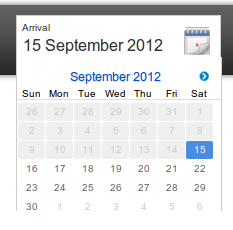
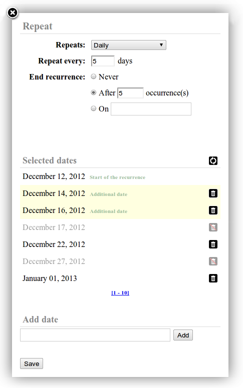

Blame it on Caesar!
Lennart Regebro
PyCon US 2013, Santa Clara, Grand Ballroom AB
Calendaring

Measuring time in celestial cycles
Calendaring is about keeping track of time, as measured in three celestial cycles, the day, the month and the year.
The basic and unavoidable problem of calendaring is that none of these periods fit into each other evenly, and that what leads to various complexities, to which their are various solutions.
One place that has seen pretty much all of these solutions at one time or another is Rome.
Roman calendars
You name 'em, they had 'em
Calendar of Romulus
- 10 lunar months
- 2-3 uncounted lunar months!
- Works for farming
- Not so great for business
The Roman calendar was originally ten lunar months long, starting with the first new moon of spring, and had two to three months of uncounted time in the winter. This is an unusual solution to the problem of synchronizing the months and the year, but there are other examples.
But having an uncounted time makes it pretty hard to make appointments, so the uncounted time was replaced with two months, January and February. That made the Roman calendar a lunar calendar.
Lunar calendars
- The year is 12 lunar months long
- The year is out of sync with the seasons
- Other examples: The Islamic calendar
But with lunar calendars, the year moves out of sync with the seasons by 10-11 days per year. To solve that a leap month was quickly introduced to keep the seasons in sync with the year, making the roman calendar a lunisolar calendar.
Lunisolar calendars
- The year is 12 or 13 lunar months long
- Leap months keep the year in sync
- Other examples: The Hebrew, Buddhist, Burmese, Babylonian, etc, etc...
Lunisolar calendars have been the most popular type through history, because they keep track of both the moon and the sun.
But they are very complex, and you have to know what you are doing. But the roman lunisolar calendar was largely decided by a the terrible combination of politics and superstition that also gave us such wonderful things as the Chinese cultural revolution and airport security, so the calendar was a crap one, and it seems to have become two to four months out of sync by 50 BC.
Enter the first villain of this talk, Gaius Julius Caesar.
Villain #1
Gaius Julius Caesar
Gaius Julius Caesar decides to fix the problems by creating his own calendar. He drops the leap month, and instead increases the length of the months to compensate. That means there is no longer any connection between the moon and the month, so the calendar is now a purely solar calendar.
Solar calendars
- The year follows the solstices/seasons
- The moon is ignored completely
- Examples: The French republican calendar, the Julian Calendar, the Ancient Egyptian calendar...
Because solar calendars drops the synchronization to the moon, they can be a lot simpler than lunisolar calendars. But although the Julian calendar drops the leap month and replaces it with a simpler leap day, it keeps all the other complexities.
My calendar brings all the boys to the yard!
And they're like, it's better than yours.
Damn right, it's better than yours!
I could teach you, but I'd have to charge.
Since he conquered Egypt, and Cleopatra, he was well acquainted with the Egyptian solar calendar which have twelve months of 30 days and a little holiday of five to six days at the end of the year.
It's dead simple, but for some reason he didn't use that, which is highly unfortunate for us.
Instead he takes the old Roman calendar that had a mix of 29 and 31 day months (because even numbers are unlucky), and moves them to be 30 and 31 days long, except for February that was 28 days long unless it is a leap year. We then end up with months that are 28, 29, 30 or 31 days long, more or less arbitrarily.
Spot the patterns
31 28 31 30 31 30 31 31 30 31 30 31
31 28 31 30 31 30 31 31 30 31 30 31
31 28 31 30 31 30 31 31 30 31 30 31
31 29 31 30 31 30 31 31 30 31 30 31
It also ends up with a leap day that is inserted in the middle of the year, and not at the end, adding even more complexity.
Julius also renames a month after himself, just because he can.
Thanks to the success of the Roman empire Julius calendar gets forced unto many unsuspecting folks and brings general pandemonium around the world.
Despite being pretty much the worst calendar ever made it has lasted for 2000 years with only a minor upgrade in how to calculate leap years. Proof that quality doesn't beat marketing.
But it's an unnecessarily complex calendar, and means you need to keep your tongue straight.
Leap Day!
Of course, the rule for leap-years is unavoidable, you need to insert an extra day from time to time to keep in sync.
February 24th!
Don't ask why
It used to be the 24th! Yup. It's the 29th now.
It's the 29th now
Except in Hungary
But not Hungary, and I think, many other Orthodox countries.
But don't despir, it get's much worse.
Which day of February that is the leap day only matters for name days, so most likely you don't have to care. The problem is that having the leap day in the middle of the year pushes all following dates one day forward, so it makes all calculations extra complicated.
And the more or less arbitrary lengths of months really doesn't help anyone either. And the Gregorian week handling is just rubbing salt into the wounds.
Weeks
I haven't mentioned weeks before, because they are not a celestial cycle. Weeks are just arbitrary groupings of days.
The Romans had an eight day week, the Egyptians used a ten-day week and so did the first french republic, as well as the early Soviet union. But ten days proved to be too long, and the seven days from Judaism has prevailed.
But you can handle weeks in different ways. The way we treat weeks, like a running cycle independent of the rest of the year means that although we dropped the lunar month, we now have another period to deal with. And although it's an even number of days, it doesn't fit into the months or years, giving is more complexity.
The Egyptian calendar splits each month into 3 ten day weeks, with the five or six day holiday not being a part of a week at all. Calculating what day of the year, day of the week and week number as a result is quite simple:
Egyptian calendar math
def day_of_year(month, day): return (month - 1) * 30 + day_of_month def day_of_week(day): return ((day - 1) % 10) + 1 def weekno(month, day): return ((day_of_year(month, day) - 1) // 10) + 1
You can't see this in the back, but it doesn't matter.
This is quite simple, and much of the complexity here is to deal with having day one really be one, and not zero.
However in the Julian/Gregorian calendar these calculations are such a mess, that the calculations of the week day and week number actually each have their own huge Wikipedia page. Seriously.
This is the generally accepted simplest and fastest way of calculating these things:
Julian calendar math
MONTH_LENGHTS_STD = [0, 31, 59, 90, 120, 151, 181, 212, 243, 273, 304, 334] MONTH_LENGHTS_LYR = [0, 31, 60, 91, 121, 152, 182, 213, 244, 274, 305, 335] MONTH_DAY_OF_WEEK = [0, 3, 2, 5, 0, 3, 5, 1, 4, 6, 2, 4] def day_of_year(year, month, day): if not year % 4 and year % 100: d = MONTH_LENGHTS_LYR[month-1] else: d = MONTH_LENGHTS_STD[month-1] return d + day def day_of_week(year, month, day): if month < 3: year -= 1 dow = (year + year//4 - year//100 + year//400 + MONTH_DAY_OF_WEEK[month-1] + day) % 7 if dow == 0: dow = 7 return dow def _weekno(year, month, day): return (day_of_year(year, month, day) - day_of_week(year, month, day) + 10) // 7 def weekno(year, month, day): week = _weekno(year, month, day) if week == 0: week = _weekno(year - 1, 12, 31) if week == 53: if _weekno(year + 1, 1, 1) == 1: week = 1 return week
That's a lot more complex, even though it actually cheats by using three pre-calculated lists.
Calendaring and you
That's a lot more complex, even though it actually cheats by using three pre-calculated lists.
So how does this complexity translate to your coding?
There is calendaring
bug born every day!
Always wear a library!
Well, it translates to "Never do this yourself unless you have to". Always do all date calculations with a library. Let the calculations be Somebody Else's Problem.
Python
datetime
Python is lucky to have to datetime library in the stdlib, and although perhaps not perfect, it's very good.
In contrast, Javascript's date handling is almost non-existent.
Javascript
There are a bunch of libraries out there, I haven't used any of them enough to cast judgment, but Moment.js looks OK, except that it perpetuates Java/Javascripts moronic zero-indexed month.
Javascript has zero-indexed months
January is 0
December is 11
Yes, both Java and Javascript has January as "0", even though nobody would ever think of January as anything else than 1. And Year one is 1, day 1 of a month is 1, so it's not even consistent.
And whose fault is that? Enter Villain number 2, James Gosling.
Villain #2
James Gosling; created Java
Here we see James Gosling, creator of Java, putting a pie in the face of a fake Bill Gates.
Obviously, James Gosling is not stupid. He just slipped up and made a small mistake, we all do. But when you do it in an API, it never goes away.
The only way to fix it not is to create a whole new Date object in Java (and Javascript), which is of course something that should be done pronto, and is likely to happen in the year never.
It also does something else wrong: it starts the week with Sunday. Because Americans have this idea that the week starts with Sundays. But how on earth can the first day of the week be a part of the week*end*?
You put the first day
into the week end?
That makes no sense!
Python and weekdays
weekday() uses 0 for Monday
And since the most popular start of the week globally is Monday, it's not uncommon to use 0 as the day of the week for Monday. Pythons weekday() function does that.
However, not only is that inconsistent with how people usually count, which starts at 1, like years, months and days does, but it also means that in the US the first day of the week from a human standpoint is seventh day from the computers standpoint which has the value 6. That confuses everyone.
ISO and weekdays
isoweekday() uses 1 for Monday
ISO therefore has determined that Monday is the first day of the week, day 1, and Sunday is the last day of the week, day 7.
This makes more sense, is more consistent and also supported by Pythons isoweekday() function.
Using 1 for Monday also has the benefit that Sunday could be day 7 and/or day 0, both which at least make some sort of sense that day 6 does not.
Always use 1 for Monday
And 7 for Sunday
Or possibly 0
But never ever 6
So in your Python calendaring code always use isoweekday() and always have Monday == 1.
I also try to accept both day 0 and day 7 for Sunday, when I need to handle such code. It makes it more flexible.
But in deference to ISO, the code should return 7 for Sunday. Or possibly 0. But never ever 6.
Time zones
A brief history of something that doesn't exist
And if that wasn't confusing enough now it's time to talk about timezones, and time to debunk a myth.
The world is NOT split into 24 time zones. There has been several proposals to do so, but that has never happened.
Instead every country has decided to adopt it's own standard time, or in the case of big countries, several standard times.
Results of this situation are Nepal's standard time of 5 h and 45 m before GMT, and standard time of Sweden between 1879 and 1900, which was 1h 14s
A timezone could be defined as an area that has the same standard time, but what "the same" means here is a matter of taste that is made worse by standard times usually varying both throughout history and also throughout the year, thanks to the most evil thing in calendaring: Daylight saving.
Villain #3

William Willet; invented DST
And this is our next villain, William Willet, the man that made daylight saving happen, because he thought other people were lazy and should get up as early as he did.
As the timezone rules for different countries are different different years you need a database over these changes, and such a database does indeed exist. It's usually called "zoneinfo" or just "tz" or "The Olson database" from the guy who started it.
zoneinfo also solves another problem the one of naming timezones. Since timezones doesn't actually exist, they don't have standardized names. Instead they usually called with some abbreviation, like GMT, UTC or CET. But since these abbreviations always have a T in them, and then also preferably an S for "Standard", there aren't that many different abbreviations to choose from.
- BST: 5 different zones
- CST: 4 different zones
- IST: 4 different zones
The result are things like CST, meaning Central Standard Time in the US, or Central Standard Time in Australia, or China Standard Time or Chungyuan Standard Time, which is what they use in Taiwan, although it's unusual that they call it that now, since Chungyuan is on the mainland. Instead it's called Central Standard Time.
- America/Chicago
- Australia/Canberra
- Asia/Shanghai
- Asia/Taipei
The maintainers of the zoneinfo database instead came up with another naming scheme which has become popular; Continent/City. They identify entities which have always had the same standard time, such as Sweden. They then name that timezone after the continent and the major city in that timezone: Europe/Stockholm.
But these are political rather than geographical entities, for good reasons. For example, there is no special zone for the area of Poland that was German before WWII. That means that if you calculate times for Wrocław using Europe/Warsaw as the timezone, you will get an answer that is one hour wrong for dates between the 15th and 30th April 1940, since Germany and Poland had different daylight saving rules!
Also, there are no special time zones for political entities that only existed before 1970.
Midnight DST change

You are scaring the computer
It also took some time to tweak the whole daylight saving idea. Quite often the shift has been done at midnight, so that instead of becoming a new day, suddenly there was another hour. Or it's done at 1am, moving the clock back to midnight. Both ideas are bad ideas. Not only because loads of people are still awake at that time, but because you get two midnights. This is confusing to people, and even more confusing to computers.
>>>> from datetime import date >>> date(2011, 2, 29) Traceback (most recent call last): File "<stdin>", line 1, in <module> ValueError: day is out of range for month
For example, a common way to check if a date is valid is to create a date object with the date information and see what happens. In Python this works fine.
js> new Date(2011, 1, 29); Tue Mar 01 2011 00:00:00 GMT+0100 (CET)
In Javascript it's a bit trickier, as the Date object doesn't make those checks. So, to check if the date is valid, you have to do this:
js> y = 2011; m = 1; d = 29; js> dt = new Date(y, m, d); js> if (dt.getFullYear() !== y || dt.getMonth() !== m || dt.getDay() !== d) { > (Insert error handling here) > }
Here you create the object, and then check if what you get is what you asked for.
But leads to some problems. I'd call them unexpected, except this is date time handling we are talking about and problems are expected.
$ TZ='Europe/Rome' js Rhino 1.7 release 3 2012 02 16 js> new Date(1972, 4, 28); Sat May 27 1972 23:00:00 GMT+0100 (CET)
TA-DA! Suddenly, May 28th 1972 becomes an invalid date! This is because Midnight that day doesn't really exist, the time so to speak went directly from 1972-05-27 23:59:59 to 1972-05-28 01:00:00, but there is some library somewhere that handles this incorrectly. new Date(1972, 4, 28, 0, 0, 0) should really return "May 28 1972 01:00:00 GMT+0100 (CET)", but this is not what happens.
But this bug, probably in some C-library in fact, has the interesting effect that people born on May 28th 1972, and several other dates have persistent problems in entering their birthdays on Italian websites. Something which can be a major problem, if you for example need to check in online for your plane.
Alessandro Amici
js> new Date(y, m, d, 12); Sun May 28 1972 12:00:00 GMT+0200 (CEST)
To avoid this in your Javascript code, add a couple of hours in the check. To be safe, add 12 hours. No-one does DST changes at noon.
Python of course, does not have this problem, because Python stores the local date and time. But that has another side effect, although a much smaller one.
Python & Timezones
And then it's time to talk about timezones and Python.
Python 2.3 - 3.1
Abstract class tzinfo only
Python 3.2 - 3.3
timezone class for fixed offsets
Python 3.4?
PEP-431: Full zoneinfo support
The datetime library has support for handling timezones, via the tzinfo type. However, the Python 2 stdlib doesn't include any actual tzinfo objects, and in Python 3.2 and 3.3 only fixed offsets are supported.
PEP-431 is in the works, and will include full time zone support in the Python stdlib, finally.
pytz or dateutil?
Let's have a shootout!
For this you need to use one of two available timezone libraries, pytz or dateutil. Both wrap (and include) the zoneinfo database. pytz is updated each time the zoneinfo database is updated. Dateutil is not updated when the zoneinfo database is, so it's database is often outdated.
pytz has the latest zoneinfo database
pytz 15 - 0 dateutil
Dateutil will on the other hand use the OS-provided zoneinfo database, which the OS should keep updated.
dateutil will use the OS database
pytz 15 - 15 dateutil
But of course Windows doesn't use zoneinfo, so it doesn't get updated on Windows.
But not on Windows
pytz 30 - 15 dateutil
On the other hand Dateutil has a function to parse dates that has timezone support.
dateutil can parse dates with time zones
pytz 30 - 30 dateutil
When moving from daylight saving the clock is moved back one hour. That opens up for an important question.
Which half past two do you mean?
Switching from 3am to 2am means these times happen twice. The way to solve it is to internally always use UTC for the dates, and only change them to other timezones for display.
That solves the problem of which half past three you mean internally but when you display it, it still says only half past three, and it will be unclear to the human reading it. Scheduling meetings in the middle of the night during DST switchover is hence inadvisable, but sometimes unavoidable.
>>> rome = pytz.timezone('Europe/Rome') >>> rome.localize(datetime(1972, 5, 28, 0, 0), is_dst=None) Traceback (most recent call last): File "<stdin>", line 1, in <module> File "/usr/lib/python2.7/dist-packages/pytz/tzinfo.py", line 322, in localize raise NonExistentTimeError(dt) pytz.exceptions.NonExistentTimeError: 1972-05-28 00:00:00 >>>
And you also will have date inputs or imports in the local timezone, so when you create date objects you need to have a way to specify if the date time is in daylight saving or not.
Here is one of the flaws of the datetime library. There is in the datetime API no way to specify which of the two half-past two's you mean.
pytz solves that, by using it's own API, in fact. Dateutil, like the datetime library, ignores the problem.
pytz has better DST handling
pytz 40 - 30 dateutil
It's not always possible to figure out the tz name of your computers timezone. This means that you have to in any application dealing with calendaring have the ability to specify the time zone in the applications configuration. Looking at the TZ environment variable, for example.
On the other hand, dateutil.tz has very handy classes for using your computers timezone, one for Unix/OSX and one for Windows. These classes will load whatever timezone you are in, without you having to figure it out.
dateutil has better local time zone support
pytz 40 - 40 dateutil
Dateutil is catching up!
tzlocal
Local time zone support for pytz
http://pypi.python.org/pypi/tzlocal
However, I recently made a module called tzlocal, that will return your computers timezone, for use with pytz, solving that problem.
Advantage pytz
PEP-431 is based on pytz
But not the API
Parsing timezones
Since the stdlib doesn't contain any real tz support it will of course not help you parse date times with timezone info. But dateutil will. It's quite intelligent about the format as well, and supports all common formats, like RFC822 for mail headers.
RFC 822 format
>>> from dateutil.parser import parse >>> parse('2003-09-25 12:45 -0300') datetime.datetime(2003, 9, 25, 12, 45, tzinfo=tzoffset(None, -10800))
So, you put in a date with a offset that is GMT minus three hours, and you get a timezone offset that is minus three hours, or ten thousand 800 seconds.
It also supports POSIX.
POSIX format
>>> parse('2003-09-25 12:45 GMT-0300') datetime.datetime(2003, 9, 25, 12, 45, tzinfo=tzoffset(None, 10800))
Wait what?
But with POSIX, it's not so easy.
For some reason, probably just another of these stupid moments, POSIX has the sign of the time offset wrong, leading to things like what you see here. You enter an offset of GMT minus three hours, and you get GMT + three hours.
The parse function will give a correct, negative offset in the first example, but in the second example it will assume you are using a POSIX format, and change the sign. Because POSIX says so.
iCalendar
RFC 5545 / RFC 2445
Parsing dates are of course something mostly done when you need to talk to other systems. Often this is just a question of parsing timestamps in a particular format. But sometimes you need to import or export calendaring data, and then there is a standard.
iCalendar is designed by The Internet Engineering Task Force Calendaring and Scheduling Working Group and by that name you realize that it's designed by committee, and therefore is amazingly complex.
RFC 5545 is he newer version of iCalendar that does take away some of the complexities, but of course, most software still generate the old version, so you still need to support all that complexity.
For example, you can define an event with a start date, that has several recurrence rules that runs in parallel as well as a list of specific dates outside that rule where the event also should happen. To make it even more fun you not only also have a list of exclusion dates when it should not happen, you have exclusion rules as well, of which you also can have several!
Now why would you want that?
The Python Secret Underground meeting schedule
First meeting: Saturday 28th of August 1999
Every Last Saturday of the month, except in August, when it's the 28th. And also, every 13th of every month, unless it's a Friday.
Well, rumour has it that the Python Secret Underground needed it for their meeting schedule.
But of course, the PSU does not exist, so that can't be true.
SECONDLY | MINUTELY | HOURLY | DAILY | WEEKLY | MONTHLY | YEARLY | |
BYMONTH | Limit | Limit | Limit | Limit | Limit | Limit | Expand |
BYWEEKNO | N/A | N/A | N/A | N/A | N/A | N/A | Expand |
BYYEARDAY | Limit | Limit | Limit | N/A | N/A | N/A | Expand |
BYMONTHDAY | Limit | Limit | Limit | Limit | N/A | Expand | Expand |
BYDAY | Limit | Limit | Limit | Limit | Expand | Note 1 | Note 2 |
BYHOUR | Limit | Limit | Limit | Expand | Expand | Expand | Expand |
BYMINUTE | Limit | Limit | Expand | Expand | Expand | Expand | Expand |
BYSECOND | Limit | Expand | Expand | Expand | Expand | Expand | Expand |
BYSETPOS | Limit | Limit | Limit | Limit | Limit | Limit | Limit |
To make matter even more fun, the recurrence rules in themselves are amazingly complex. Of course you must be able to have both weekly and monthly and daily and yearly rules, and rules like the second to last Thursday of every third month. Fine. But only a committee including Microsoft would allow you to have all of them at once in one rule, allowing such weirdness as having a BYMONTH and a BYHOUR value in a WEEKLY recurrence, resulting in a couple of pages worth of discussion in what these things actually mean.
dateutil.rrule
Implements all this so you don't have to!
Again the recommendation for all of this is to use a library. And here you don't have a choice. You need to use dateutil for recurrence. dateutil has an rrule module which handles these things.
Using a timezone in iCalendar
DTSTART;TZID=America/New_York:19980119T020000
In iCalendar you can of course specify time zones for times. But, you need to define the time zone
You must define the zone
BEGIN:VTIMEZONE TZID:America/New_York LAST-MODIFIED:20050809T050000Z BEGIN:DAYLIGHT DTSTART:19670430T020000 RRULE:FREQ=YEARLY;BYMONTH=4;BYDAY=-1SU;UNTIL=19730429T070000Z TZOFFSETFROM:-0500 TZOFFSETTO:-0400 TZNAME:EDT END:DAYLIGHT BEGIN:STANDARD DTSTART:19671029T020000 RRULE:FREQ=YEARLY;BYMONTH=10;BYDAY=-1SU;UNTIL=20061029T060000Z TZOFFSETFROM:-0400 TZOFFSETTO:-0500 TZNAME:EST END:STANDARD BEGIN:DAYLIGHT DTSTART:19740106T020000 RDATE:19750223T020000 TZOFFSETFROM:-0500 TZOFFSETTO:-0400 TZNAME:EDT END:DAYLIGHT BEGIN:DAYLIGHT DTSTART:19760425T020000 RRULE:FREQ=YEARLY;BYMONTH=4;BYDAY=-1SU;UNTIL=19860427T070000Z TZOFFSETFROM:-0500 TZOFFSETTO:-0400 TZNAME:EDT END:DAYLIGHT BEGIN:DAYLIGHT DTSTART:19870405T020000 RRULE:FREQ=YEARLY;BYMONTH=4;BYDAY=1SU;UNTIL=20060402T070000Z TZOFFSETFROM:-0500 TZOFFSETTO:-0400 TZNAME:EDT END:DAYLIGHT BEGIN:DAYLIGHT DTSTART:20070311T020000 RRULE:FREQ=YEARLY;BYMONTH=3;BYDAY=2SU TZOFFSETFROM:-0500 TZOFFSETTO:-0400 TZNAME:EDT END:DAYLIGHT BEGIN:STANDARD DTSTART:20071104T020000 RRULE:FREQ=YEARLY;BYMONTH=11;BYDAY=1SU TZOFFSETFROM:-0400 TZOFFSETTO:-0500 TZNAME:EST END:STANDARD END:VTIMEZONE
Good enough
DTSTART:19980119T080000Z DTSTART:19980119T020000
Other lovely subtleties is that because Microsoft as involved, you can't just specify timezones with the zoneinfo name. No, you have to include and define the timezones in the iCalendar file itself. The way to do that is: Try to avoid it, and send all dates without timezones or in UTC.
The icalendar module
- No Python 3 support (yet)
- Bugs in advanced cases
- Good enough
At least you don't have to parse and generate the files yourself, there is an iCalendar module for Python, that's pretty good, although it still has bugs in edge cases, and no Python 3 support yet.
I don't know of any iCalendar module for Javascript, so I've started one, but it's far from finished. Google has a rrule implementation, but it requires caja.
Further considerations
- Events with or without time zones?
- Or both?
- Different time zone for start and end?
- Whole-day events?
All the problems of dates and times come together in calendaring applications with some additional problems.
What about events that have no timezone, such as holidays? You need to support it, but you might only need to support it for whole-day event.
What about events that start in one timezone and end in another? It could happen. Again, you can probably ignore it.
User interface
- Local display formats
- Event lists: Upcoming / previous
- Day / week / month / year views
- First day of week support
But the most time consuming problem in calendaring is probably the user interface.
Date inputs: The text field
- Fast entry
- Input format always a problem
How do you enter a date and time in a nice way? Just typing it in would be a reasonable choice if there was a standard for writing date. But since 01/02/03 can mean 1st of February 2003 or second of January 2003 or third of February 2001, that's not an option. People will not know what format to write.
Writing the format besides the input doesn't help, becuase people don't don't. Not even popup boxes with big red STOP signs.
The date picker
- Most common solution
- Not accessible
- Requires Javascript
- Do not allow you to type in dates
The generic solution is a date picker, a little calendar that pops up. This doesn't support enter hours an minutes, which is a nice feature to have. I've seen solutions with sliders for entering hours and minutes, which seems to work well.
The drop down list
- Slow to use
- Accessible
- Doesn't allow you to type in dates
But if you have a website you want your site to work without Javascript for accessibility reasons. Drop down lists is a good option, although you get a problem with minutes. You need either really long drop down boxes, or you need to list only five minute intervals. Neither are a good solutions.
Timezone selection also has the same problem of being a really long list.
Also this doesn't allow you to type in dates. That is a problem you also have with many date pickers, they block the entry field. Both drop-downs and date pickers are slow to use with a lot of clicking. Entering a lot of dates quickly gets very annoying.
So try to have a way to enter dates by typing them in.
Also, there should be a check box saying that this event goes on for the whole day, and preferably, the end date should be optional.
Displaying a whole calendar is a nightmare of it's own. In a week or day view you need to position the events correctly during the day, and you want multiple events that happen at the same time to not block each other You also by default want to show just the work-hours, but events outside these hours should still be visible somehow. Tricky stuff.
And how to show all day events? Well, a common solution is to have a special all-day even line at the top, as this example shows of a Javascript calendar called fullcalendar. FUllcalendar is a good alternative to writing your own if you are working on the web, and OK with a JS calendar.
Main problem is that there is no indication that you have an event that is outside the time shown.
jquery.recurrenceinput
https://github.com/collective/jquery.recurrenceinput.js
An making a nice easy to use UI for recurrence rules is, well, impossible. There are just too many options. You have to limit yourself.
There is a widget, I wrote most it, it took months. Hexagon IT payed for it.
Believe or not, there are things about calendaring that is fun and interesting too! But I didn't have time for that, it would have made this talk at least 30m longer.
But I have written these things up on G+ and hope to make blog-posts about it soon, so keep your eyes open!
Q?
Questions?
Creaditus Generalus
Presentation software:
Hovercraft
https://github.com/regebro/hovercraft
Fonts:
Cinzel by Natanael Gama
DejaVu Mono Book